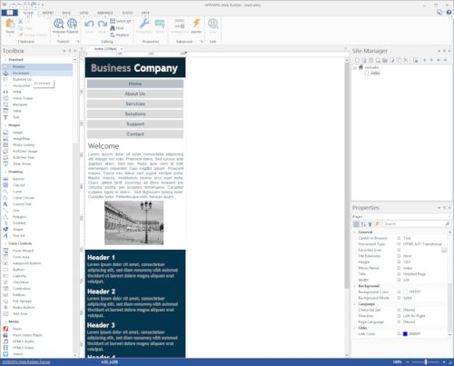

Responsive Web Design in WYSIWYG Web Builder
You can view a live demo here:
https://www.wysiwygwebbuilder.tk/support/rwd/
Download the demo project:
https://www.wysiwygwebbuilder.tk/support/rwd/rwd.zip
Related tutorials:
Responsive Web Design - The Basics
Responsive Web Design - Tools
Responsive Web Design - FAQ (must read!)
How to create Responsive Text
Other responsive design tutorials:
Responsive Web Design - Design Techniques
Mobile Web Design in WYSIWYG Web Builder
An introduction to the Layout Grid
Getting started with FlexBox
An Introduction to Flex Grid
https://www.wysiwygwebbuilder.tk/support/rwd/
Download the demo project:
https://www.wysiwygwebbuilder.tk/support/rwd/rwd.zip
Related tutorials:
Responsive Web Design - The Basics
Responsive Web Design - Tools
Responsive Web Design - FAQ (must read!)
How to create Responsive Text
Other responsive design tutorials:
Responsive Web Design - Design Techniques
Mobile Web Design in WYSIWYG Web Builder
An introduction to the Layout Grid
Getting started with FlexBox
An Introduction to Flex Grid
Creating a Responsive Web Page in WYSIWYG Web Builder
Step 1
Let's start with a standard template: Click File->New Website from Template and select 'WWB Template 10'.
In these steps we will create a mobile version for this page with a breakpiont at 320 pixels, which is a common width for mobile phones.
Step 1
Let's start with a standard template: Click File->New Website from Template and select 'WWB Template 10'.
In these steps we will create a mobile version for this page with a breakpiont at 320 pixels, which is a common width for mobile phones.
The different variants generally share the same content (text, images etc) and you can change the position and size of objects for each breakpoint. You can also add unique content for specific screen widths, which makes it possible to hide objects on smaller screens.

To switch between breakpoints click the 'Breakpoints' drop down menu and select the desired breakpoint. To go back to the default layout, select 'Default'. There is also quick menu for switching breakpoints available in the upper right corner of the Ribbon.
Important notes about Responsive Web Design
Objects can have a different size, position and visibility state per breakpoint. For some objects it is also possible to change the color, font and other properties in breakpoints. The responsive properties per object are documented in the help.
Although objects can have different sizes in breakpoints, there are a few exceptions. For example shapes and other drawing tools will have the same size in all breakpoints. The reason for this is because only one image will be published and if you change the size of that image in one breakpoint then it would look distorted in another breakpoint. But you can use multiple shapes, one for each breakpoint and hide the ones you do not use in other breakpoints.
Note however that if you select 'Publish as CSS3' in the shape's properties, then the shape will be responsive!
If you share text between multiple breakpoints then set the 'output format' in the compatibility option to 'Default', because the other options optimize the text for a specific width. If you really need to use one of the compatibility options then consider using a separate text object for each breakpoint, so it can be optimized for that specific width.
Objects can only be part of one Layer (and Form, Carousel, Tabs, Accordion, Dialog). So if you move an object to a layer in one breakpoint then it will automatically be part of the same layer in other breakpoints!
If you add a new object to a breakpoint then it will initially be hidden on all other breakpoints. You can use the Object Manager to unhide it if you also want it on other breakpoints. This behavior can be disabled in: Tools->Options->General->Hide new objects on other breakpoints
If you delete an object from a breakpoint then it will be removed from all other views as well. If you want to hide the object then you can use the Object Manager.
You can test breakpoints in your desktop browser. Resize the browser window to activate breakpoints.
Some browsers also have dedicated tools for testing responsive web sites. For example, FireFox has a Responsive Design View which is great to test breakpoints. Consult the documentation of the browser for more details.
Browsers that do not support CSS3 media queries, will display the default layout.
Objects can have a different size, position and visibility state per breakpoint. For some objects it is also possible to change the color, font and other properties in breakpoints. The responsive properties per object are documented in the help.
Although objects can have different sizes in breakpoints, there are a few exceptions. For example shapes and other drawing tools will have the same size in all breakpoints. The reason for this is because only one image will be published and if you change the size of that image in one breakpoint then it would look distorted in another breakpoint. But you can use multiple shapes, one for each breakpoint and hide the ones you do not use in other breakpoints.
Note however that if you select 'Publish as CSS3' in the shape's properties, then the shape will be responsive!
If you share text between multiple breakpoints then set the 'output format' in the compatibility option to 'Default', because the other options optimize the text for a specific width. If you really need to use one of the compatibility options then consider using a separate text object for each breakpoint, so it can be optimized for that specific width.
Objects can only be part of one Layer (and Form, Carousel, Tabs, Accordion, Dialog). So if you move an object to a layer in one breakpoint then it will automatically be part of the same layer in other breakpoints!
If you add a new object to a breakpoint then it will initially be hidden on all other breakpoints. You can use the Object Manager to unhide it if you also want it on other breakpoints. This behavior can be disabled in: Tools->Options->General->Hide new objects on other breakpoints
If you delete an object from a breakpoint then it will be removed from all other views as well. If you want to hide the object then you can use the Object Manager.
You can test breakpoints in your desktop browser. Resize the browser window to activate breakpoints.
Some browsers also have dedicated tools for testing responsive web sites. For example, FireFox has a Responsive Design View which is great to test breakpoints. Consult the documentation of the browser for more details.
Browsers that do not support CSS3 media queries, will display the default layout.
Step 2
First make sure the Output Format of all text is set to Default. Otherwise the text objects cannot have different sizes in different breakpoints!
First make sure the Output Format of all text is set to Default. Otherwise the text objects cannot have different sizes in different breakpoints!
Step 3
Next we add a breakpoint.Click Page->Responsive Web Design->Manage Breakpoints then add a breakpoint with a max-width of 320.
Click OK to confirm and OK again to close Manage Breakpoints.
Next we add a breakpoint.Click Page->Responsive Web Design->Manage Breakpoints then add a breakpoint with a max-width of 320.
Click OK to confirm and OK again to close Manage Breakpoints.
Step 4
If you take a closer look at this template you may notice that a large shape has been used behind the 4 headers. It's important to keep in mind that a shape has the same size in all breakpoints. So if you resize the shape in one breakpoint then it will get the same size in other breakpoints too! Therefor in this layout we will make a copy of the shape so we can give it a different sizes.
Make a copy 'shape5'. Then use the Object Manager to hide 'shape5', because we do no longer need it in this breakpoint. For this breakpoint we will use the copy of the shape, so we can resize it without affecting the layout on other breakpoints.
Now let's resize the shape and reposition the text objects to optimize the layout for mobile phones.
If you take a closer look at this template you may notice that a large shape has been used behind the 4 headers. It's important to keep in mind that a shape has the same size in all breakpoints. So if you resize the shape in one breakpoint then it will get the same size in other breakpoints too! Therefor in this layout we will make a copy of the shape so we can give it a different sizes.
Make a copy 'shape5'. Then use the Object Manager to hide 'shape5', because we do no longer need it in this breakpoint. For this breakpoint we will use the copy of the shape, so we can resize it without affecting the layout on other breakpoints.
Now let's resize the shape and reposition the text objects to optimize the layout for mobile phones.
Activate the breakpoint by selecting '320px' in the 'Breakpoints' menu.
You will now see a copy of the default layout. Also notice that the title of the workspace tab has changed to indicate that we are working on a breakpoint.
The next step is to resize and reposition all objects so they are within the 320 pixel boundary.
Step 5
You may also have noticed that the CSS menu is a little bit to wide for the target screen, so we will use a different menu for this breakpoint.
Make a copy 'CssMenu1'. Then use the Object Manager to hide 'CssMenu1', because we do no longer need it in this breakpoint.
Change the Layout mode of the new menu to 'vertical' and set the button size to 'Stretch'.
You may also have noticed that the CSS menu is a little bit to wide for the target screen, so we will use a different menu for this breakpoint.
Make a copy 'CssMenu1'. Then use the Object Manager to hide 'CssMenu1', because we do no longer need it in this breakpoint.
Change the Layout mode of the new menu to 'vertical' and set the button size to 'Stretch'.
Step 6
Finally we can resize the other objects. Text objects and layers can be resized without affecting other breakpoints, so we do not need copies for that. The final layout may look something like this:
Finally we can resize the other objects. Text objects and layers can be resized without affecting other breakpoints, so we do not need copies for that. The final layout may look something like this:

Use preview to see the result in the browser. Resize the browser window to activate the breakpoint at 320 pixels.
Tips:
• Set all rectangular shapes to 'CSS3 output', this will make the shapes responsive.
• Set the output format of all text objects to 'Default' (otherwise they will have a fixed size).
• You can use the keyboard combination Shift+Ctrl+R to outline all non-responsive objects.
• If you need to duplicate an object, so it can have different properties in another breakpoint then you can quickly clone and hide the original object with the 'Clone and Hide' option in the object's context menu.
• Also make sure you read the Responsive Web Design FAQ!
• Set all rectangular shapes to 'CSS3 output', this will make the shapes responsive.
• Set the output format of all text objects to 'Default' (otherwise they will have a fixed size).
• You can use the keyboard combination Shift+Ctrl+R to outline all non-responsive objects.
• If you need to duplicate an object, so it can have different properties in another breakpoint then you can quickly clone and hide the original object with the 'Clone and Hide' option in the object's context menu.
• Also make sure you read the Responsive Web Design FAQ!
Tip:
Instead of using absolute/fixed layout and breakpoints, you can also create flexible layouts in WYSIWYG Web Builder!
When using Flexible / Floating Layouts (Re-flow)I, the layout will automatically adjust to the screen size.
Related tutorial:
Responsive Web Design - Design Techniques
Instead of using absolute/fixed layout and breakpoints, you can also create flexible layouts in WYSIWYG Web Builder!
When using Flexible / Floating Layouts (Re-flow)I, the layout will automatically adjust to the screen size.
Related tutorial:
Responsive Web Design - Design Techniques
Breakpoints
A breakpoint is separate 'view' of the page in WYSIWYG Web Builder. A page can have multiple breakpoints, each one optimized for a specific screen width. For example, you can have the standard desktop layout, one for tablets (1024 px) and another one for mobile phones (320 px). Common breakpoints are:
• 320 px, Mobile portrait , 480 px, Mobile landscape
• 768 px, Tablet portrait 1024 px, Tablet landscape/Netbook
• 1280 px and greater, Desktop
Of course you can define your own widths and have as many breakpoints as you like (max 25), although usually you will have no more than 3. To add or edit breakpoints click the 'Manage Breakpoints' option in the Page menu.
A breakpoint is separate 'view' of the page in WYSIWYG Web Builder. A page can have multiple breakpoints, each one optimized for a specific screen width. For example, you can have the standard desktop layout, one for tablets (1024 px) and another one for mobile phones (320 px). Common breakpoints are:
• 320 px, Mobile portrait , 480 px, Mobile landscape
• 768 px, Tablet portrait 1024 px, Tablet landscape/Netbook
• 1280 px and greater, Desktop
Of course you can define your own widths and have as many breakpoints as you like (max 25), although usually you will have no more than 3. To add or edit breakpoints click the 'Manage Breakpoints' option in the Page menu.
With the increase in popularity of browsing on mobile phones and tablets it is becoming essential to create web sites that are optimized to the needs of these users. Previously you had to create different versions of the website and use scripts to redirect the visitor to the mobile version of the page. WYSIWYG Web Builder 10+ introduces 'Responsive Web Design' which allows you to create a single HTML page containing different variants of the layout, each optimized for specific device widths. Your website will dynamically respond to the screen size of the visitor and display the layout most appropriate to their device. These different variants are called 'breakpoints' and uses CSS3's media queries.